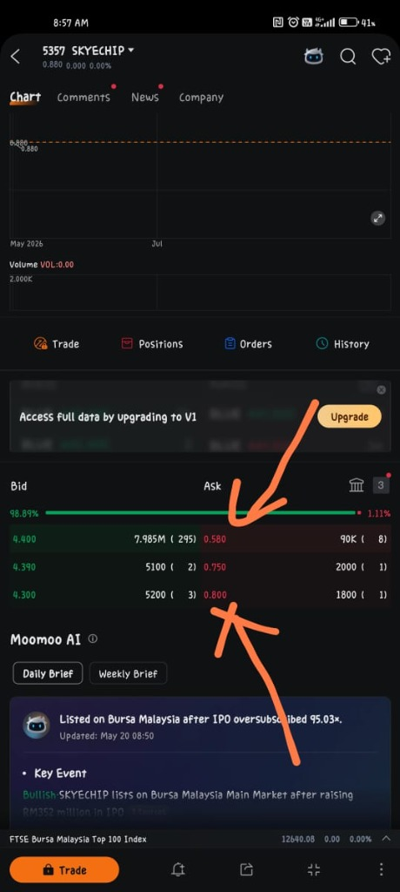
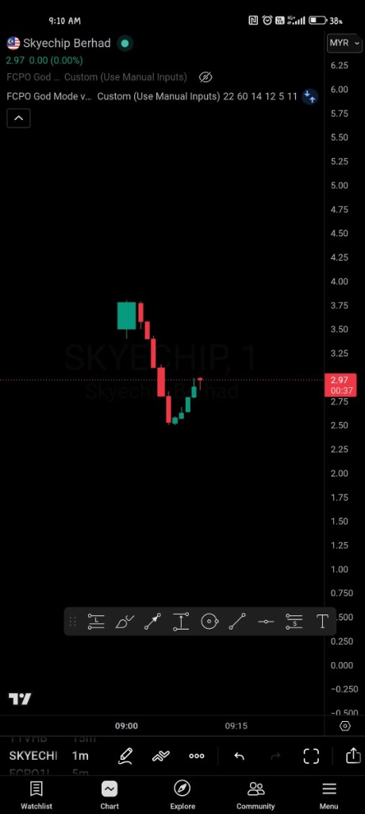
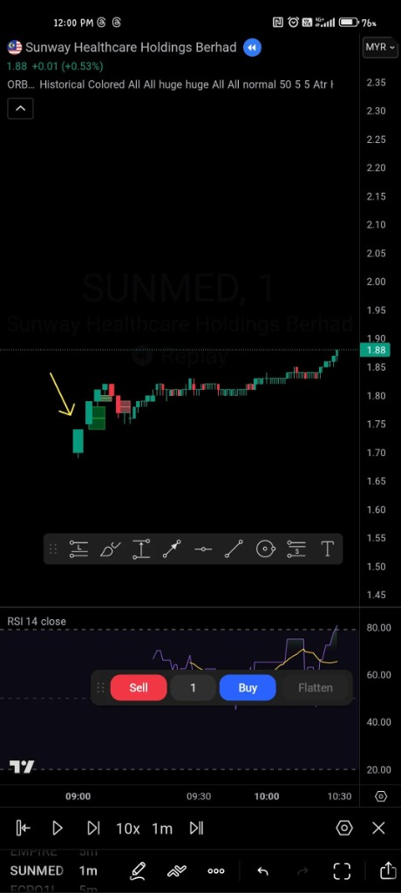

Hunter's IPO Tips
Master the art of the listing day and maximize your capital allocation efficiency.
Decoding the Hunter Grade
How we rank IPOs based on institutional demand and market sentiment.
High Alpha
- Oversubscription > 50x
- Tech / AI / Green Energy Sectors
- PE Ratio lower than peers
- Tier 1 Cornerstone Investors
Steady Growth
- Oversubscription 20x - 50x
- Industrial / Consumer Goods
- Fair Valuation (Market Average)
- Consistent Dividend Policy
High Risk
- Oversubscription < 20x
- Commodity / Legacy Sectors
- High PE Ratio (> Industry Avg)
- High Debt-to-Equity Ratio
The [S] Factor
In Malaysia, Shariah compliance is a massive demand driver.
Cornerstone Anchors
Look for big names in the Prospectus Summary.
Price Stabilization
Ever heard of the "Green Shoe"? It's your safety net.
Promoter Lock-up
Founders can't just "dump and run" in Malaysia.
Dividend Policy
Look for the "Dividend Policy" section in the prospectus summary.
The 9:00 AM Battle (TOP)
Between 8:30 AM and 9:00 AM, you will see the Theoretical Opening Price (TOP). This is the price where the most orders match.
Contoh Sebenar (SkyeChip): Screenshot di sebelah menunjukkan kedalaman barisan pembeli (Bids) dan penjual (Asks) di platform Moomoo beberapa minit sebelum pasaran dibuka.
Perhatikan jurang harga (Spread) dan volume pada Theoretical Opening Price untuk menilai kekuatan demand sebelum pasaran secara rasmi bermula pada jam 9:00 pagi.

Moomoo MY Order Book @ Pre-Open BattleSOP Scalping: The 1-Minute Rule (tf1M)
Untuk trading pada hari listing (terutamanya bagi IPO Grade B), jangan sesekali trade secara rambang atau menggunakan timeframe lilin (candle) yang terlalu besar. Standard operating procedure (SOP) mewajibkan anda menganalisis carta pada Timeframe 1-Minit (tf1M).
Hype permulaan selalunya melonjakkan harga pada Minit Pertama. Namun, menjelang Minit Kedua (Min 2), tekanan jualan (profit-taking) mula masuk.
Jika lilin Minit 2 melorot dan memecahkan paras sokongan (break support) Minit Pertama, anda wajib CLOSE POSITION / CUT LOSS serta-merta tanpa sebarang penangguhan!
⚠️ Contoh Sebenar: IPO seperti Empire Premium (Empire Sushi) dan Inspace Creation mempamerkan corak kejatuhan pantas ini sebaik sahaja memecah support Minit Pertama dan terus menjunam tanpa kembali.

SkyeChip tf1M: Minit 2 terus break support M1 & junam! Sama macam Empire & Inspace.')"> SkyeChip tf1M: Minit 2 terus break support M1 & junam! Sama macam Empire & Inspace. (Click to Zoom Full-Screen)
Satu-satunya justifikasi munasabah untuk memegang (hold) saham IPO melebihi Minit Kedua adalah apabila harga terus menerobos naik mencatatkan New High (Harga Tertinggi Baharu) secara konsisten pada tf1M dengan sokongan volume yang padu.
🚀 Contoh Sebenar: Kaunter berkualiti tinggi seperti Sunway Medical (SunMed) mencatatkan new high berturut-turut pada tf1M pada hari pertamanya, membolehkan pelabur terus hold dan ride the trend dengan selamat untuk pulangan maksima.

SunMed tf1M: Konsisten buat New High. Trend kukuh membolehkan hold & ride!')"> SunMed tf1M: Konsisten buat New High. Trend kukuh membolehkan hold & ride! (Click to Zoom Full-Screen)Golden Rule: IPO listing day bergerak sepantas kilat. Wajib monitor tf1M rapat-rapat. Break support Minit 1 = terus close. Buat New High = boleh hold. Sentiasa utamakan perlindungan modal!
The 50/50 Rule
Fear of missing out vs. greed is the biggest enemy on listing day.
No MITI Scarcity
IPOs like SkyeChip are special because they have no MITI tranche.
Broker Heat Check
Watch for "Fully Subscribed" reports from preferred brokers like Moomoo MY 12-24h before closing.
Common Hunter Mistakes
Ignoring the IB
Certain Investment Banks (like M&A Securities) have a track record of higher Day 1 pops. Don't ignore the pedigree of the underwriter.
Application Late
Don't wait until 4:55 PM on the closing date. System traffic can lag and you might miss the boat. Aim for 24 hours before closing.
Market Order at Open
Using "Market Orders" at 9:00 AM can be dangerous if the bid/ask spread is wide. Use "Limit Orders" to control your exit price.
Ready to Apply?
Use the Ballot Calculator to find your optimal tier and check the "Hunter Pro" strategy for financing options.